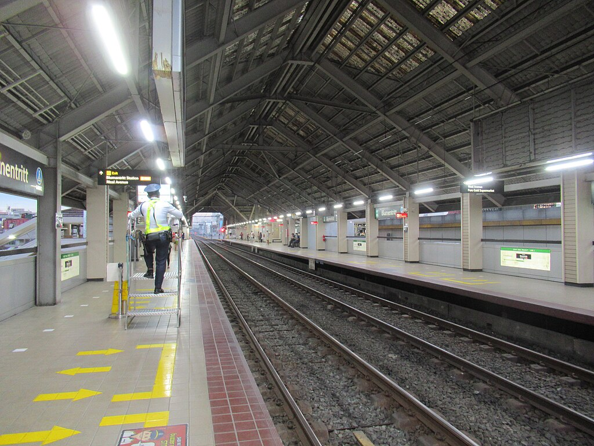

Blumentritt
LRT-1 station
Blumentritt station is an elevated Manila Light Rail Transit (LRT) station situated on Line 1. The station serves the districts of Tondo, Santa Cruz, and Sampaloc in Manila. The station itself is located near Blumentritt Road, which the station was named after. The street itself is named to honor Bohemian professor Ferdinand Blumentritt, one of José Rizal's closest associates and a sympathizer of the Propaganda Movement.
With the ongoing construction of NLEX Connector (previously known as NLEX-SLEX Connector Road, the station was built below the elevated expressway.
Blumentritt station serves as the seventh station for Line 1 trains headed to Baclaran, the fourteenth station for trains headed to Fernando Poe Jr., and is one of the five Line 1 stations serving Santa Cruz District, the others being Tayuman, Bambang, Doroteo Jose, and Carriedo.
It is the second-to last station on Rizal Avenue before the line shifts to Rizal Avenue Extension at Abad Santos station.
Blumentritt station is one of the blast locations where a bomb exploded in a train cab on December 30, 2000, as part of the Rizal Day bombings that caused 22 fatalities and around 100 injuries.
| Blumentritt | ||||||||||||
|---|---|---|---|---|---|---|---|---|---|---|---|---|
|  | ||||||||||||
| General information | ||||||||||||
| Location | Rizal Avenue, Santa Cruz, Manila, Metro Manila, Philippines | |||||||||||
| Owned by | Department of Transportation Light Rail Transit Authority |
|||||||||||
| Operated by | Light Rail Manila Corporation | |||||||||||
| Line(s) | Line 1 | |||||||||||
| Platforms | 2 (2 side) | |||||||||||
| Tracks | 2 | |||||||||||
| Connections | PNR Blumentritt | |||||||||||
| Construction | ||||||||||||
| Structure type | Elevated | |||||||||||
| Other information | ||||||||||||
| Station code | BL | |||||||||||
| History | ||||||||||||
| Opened | May 12, 1985 | |||||||||||
| Services | ||||||||||||
|
||||||||||||
| Out-of-system interchange | ||||||||||||
|
||||||||||||
With the ongoing construction of NLEX Connector (previously known as NLEX-SLEX Connector Road, the station was built below the elevated expressway.
Blumentritt station serves as the seventh station for Line 1 trains headed to Baclaran, the fourteenth station for trains headed to Fernando Poe Jr., and is one of the five Line 1 stations serving Santa Cruz District, the others being Tayuman, Bambang, Doroteo Jose, and Carriedo.
It is the second-to last station on Rizal Avenue before the line shifts to Rizal Avenue Extension at Abad Santos station.
Blumentritt station is one of the blast locations where a bomb exploded in a train cab on December 30, 2000, as part of the Rizal Day bombings that caused 22 fatalities and around 100 injuries.
A Philippine National Railways (PNR) station with the same name exists just a short walk from the station. Buses, jeepneys and taxis that ply Rizal Avenue and nearby routes stop at Blumentritt station, where there is a nearby transportation terminal. Numerous tricycles could also be found near the station, servicing quick transportation from people disembarking from the station and from the jeepneys.
- On December 30, 2000, during the Rizal Day, a 1000 class LRV train (Car number 1037) was involved in the Rizal Day bombings at Blumentritt station. The attack on the line killed some 22 people and injured hundreds. Eight members of both Jemaah Islamiyah and the Moro Islamic Liberation Front (MILF), which include Hambal, Asia's most wanted man, and Fathur Rahman al-Ghozi, were charged with plotting and masterminding the attacks in 2003, some three years after the attacks. Three suspects were put on trial, with al-Ghozi receiving 17 years in prison due to the illegal possession of explosives. Al-Ghozi later died in a firefight after attempting to escape from prison.
| Existing stations | |
|---|---|
|
Baclaran
EDSA Libertad Gil Puyat Vito Cruz Quirino Pedro Gil United Nations Central Carriedo |
Doroteo Jose
Bambang Tayuman Blumentritt Abad Santos R. Papa 5th Avenue Monumento Balintawak Fernando Poe Jr. |
| Under construction | |
|
Redemptorist
MIA Asia World Ninoy Aquino |
Dr. Santos
Las Piñas Zapote Niog |
| North Triangle | |